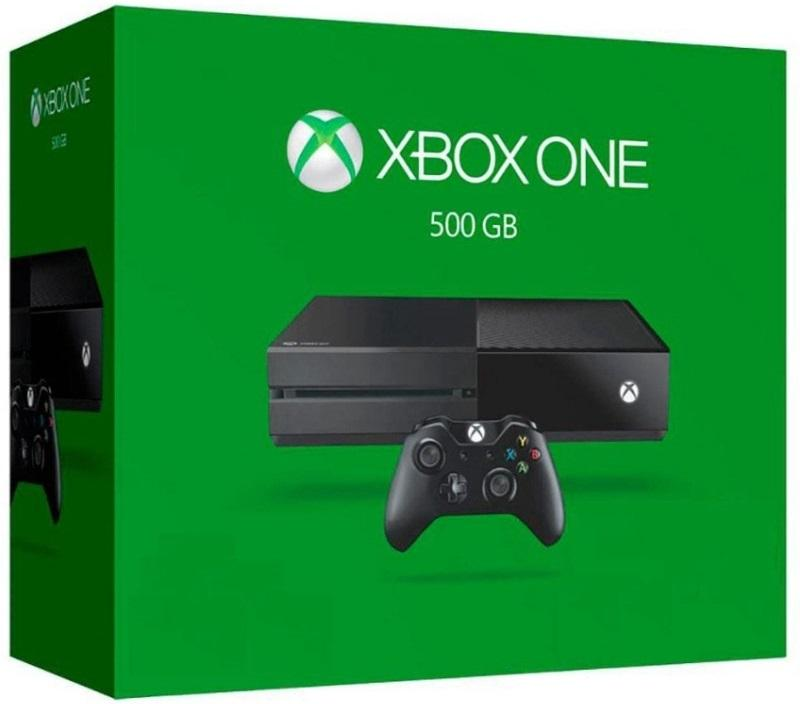
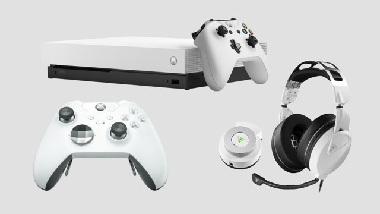
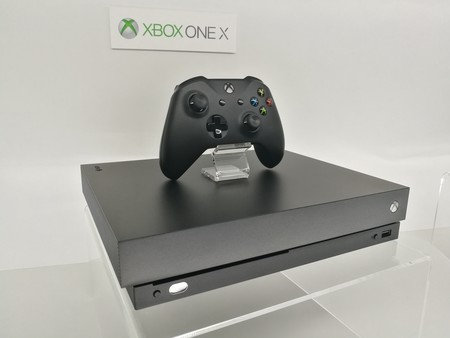

Entretenimiento
Xbox One
Xbox One es la tercera videoconsola de sobremesa de la marca Xbox, producida por Microsoft. Forma parte de las videoconsolas de octava generación, fue presentada por Microsoft el 21 de mayo de 2013.5 Es la sucesora de la Xbox 360 y actualmente compite con PlayStation 4 de Sony y Wii U y Switch de Nintendo. Su salida a la venta fue el 22 de noviembre de 20136 a un precio de 499 dólares

El Firmware actual de la consola es el 10.0.17133.2020 (rs4_release_xbox_dev_1804.180418-1415), donde hay más opciones de salida de vídeo, hay un nuevo nivel de interactividad de Mixer, se pueden compartir las capturas en Twitter, hay torneos abiertos, se pueden poner los temas en un horario, hay mejoras al Narrador, mejoras en Edge, hay más audio inmersivo y hay un filtrado avanzado para propietarios de clubes.

La consola Xbox One se empezó a gestar tras la salida al mercado de su antecesora, la Xbox 360. Aunque los medios especializados la bautizaron como Xbox 720,9 el primer kit de desarrollo oficial creado por Microsoft recibió el nombre en clave de Durango11 y se puso a disposición de algunos desarrolladores a mediados del año 2012. Sin embargo no fue hasta el 21 de mayo de 2013 que la compañía hizo oficial su existencia bajo el nombre de Xbox One. Tras esta primera presentación, tuvo lugar una segunda en el E3 2013 donde se revelaron muchas de las características de la máquina que ya era totalmente jugable y se lanzó a los mercados.
